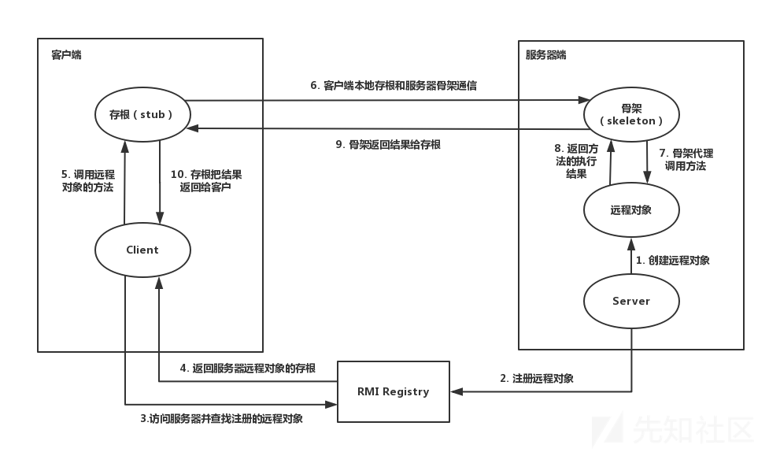

rmi(Remote Method Invocation)是java内的远程调用服务，可以实现从一个jvm远程调用另一个jvm的代码。
提供服务的一方我们称之为服务器，而实现远程调用的一方我们称之为客户端。
本篇文章主要描述rmi的使用方法，以及它在安全研究方向的作用。
代码实现
首先用代码简单实现一个server和client
Server.java
1
2
3
4
5
6
7
8
9
10
11
12
13
14
15
16
17
18
19
20
21
22
23
24
25
26
27
28
29
30
31
32
33
34
35
36
|
package RMI;
import java.rmi.Naming;
import java.rmi.Remote;
import java.rmi.RemoteException;
import java.rmi.registry.LocateRegistry;
import java.rmi.server.UnicastRemoteObject;
public class Server {
public interface IRemoteHelloWorld extends Remote{
public String hello() throws RemoteException;
}
public class RemoteHelloWorld extends UnicastRemoteObject implements IRemoteHelloWorld{
protected RemoteHelloWorld() throws RemoteException {
}
@Override
public String hello() throws RemoteException {
System.out.println("call from");
return "hello world";
}
}
private void start() throws Exception{
RemoteHelloWorld h = new RemoteHelloWorld();
LocateRegistry.createRegistry(1099);
Naming.bind("rmi://localhost:1099/Hello",h);
}
public static void main(String[] args) throws Exception {
new Server().start();
}
}
|
一个rmi server分为三个部分：
- 一个继承了
java.rmi.Remote的接口(IRemoteHelloWorld)， 其中定义了要被远程调用的方法(IRemoteHelloWorld.hello)
- 一个实现了此接口的类(RemoteHelloWorld)
- 一个主类，用来创建Registry， 并把上面的类实例化并绑定到监听地址上。
Client.java
1
2
3
4
5
6
7
8
9
10
11
12
13
14
15
|
package RMI;
import java.net.MalformedURLException;
import java.rmi.Naming;
import java.rmi.NotBoundException;
import java.rmi.RemoteException;
public class Client {
public static void main(String[] args) throws MalformedURLException, NotBoundException, RemoteException {
Server.IRemoteHelloWorld hello = (Server.IRemoteHelloWorld) Naming.lookup("rmi://localhost:1099/Hello");
String ret = hello.hello();
System.out.println(ret);
}
}
|
注意上面我们用了Server.IRemoteHelloWorld的强制类型转换，这意味着我们在client端还是需要
server端绑定的类的已实现接口的。
即IRemoteHelloWorld接口的代码同时存在于server和client端， 而RemoteHelloWorld只用存在于server端就行了。
先运行Server.java, 再运行Client.java. 可以看到已打印出"Hello world"
原理
我们借用下面这张图来了解下rmi的调用过程

如图， rmi组件总共有三大块：
registry作用类似于一个网关， 服务端在启动时向其注册一个name到对象的关系，客户端查询到此关系再向服务器端
发送请求数据，服务器处理后返回结果。
它们之间传输数据的格式都是java反序列化数据。 这也是为什么它经常和各种安全漏洞关联起来的原因。
安全
这一段留待后面对java反序列化漏洞更熟悉之后再写